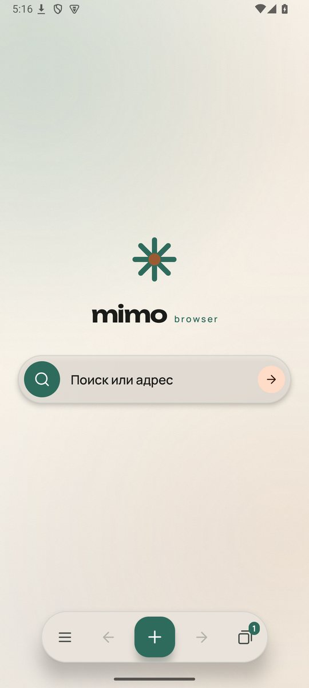

Вкладки, которые помнят
Открытые страницы и активная вкладка сохраняются между запусками. Переключайтесь карточками с названием и значком сайта.
Mimo Browser — это вкладки, закладки, история и загрузки в спокойном интерфейсе. Без аккаунта, облака и бесконечных настроек. Только вы и страницы, которые важны.

Плавающий док, живые карточки и адресная строка, которая прячется, когда вы читаете.
Открытые страницы и активная вкладка сохраняются между запусками. Переключайтесь карточками с названием и значком сайта.
Одна строка понимает и адрес, и запрос. Подсказки берутся из закладок и истории, а поисковик выбирается в настройках.
При прокрутке вниз она уступает место странице, при движении вверх возвращается. Под пилюлей — живое размытие страницы (Android 13+), а не серая плашка.
Звёздочка сохраняет страницу, а библиотека собирает закладки, историю по дням и загрузки в одном месте.
Файлы скачиваются в фоне, показывают размер и статус, открываются и отправляются в другие приложения.
Дом с быстрым доступом, недавней историей и большим поиском. Плавающий док прозрачный, а меню раскрывается из него стеклянной поверхностью с размытием страницы.
Тёплая бумага с мягкими формами или монохром с красным акцентом и точечным шрифтом. Плюс светлая, тёмная и системная темы.
История, закладки и настройки остаются на устройстве. Ни аккаунта, ни синхронизации, ни телеметрии.
Светлая и тёмная темы, карточки вкладок, библиотека, меню и характер Nothing.
Mimo Browser не просит аккаунт и не синхронизирует данные. Закладки, история, настройки и файлы хранятся на устройстве. Сайты получают сеть только тогда, когда вы сами открываете страницу.
Версия 0.1.8 для Android 9+.
Обновления — прямо из приложения.